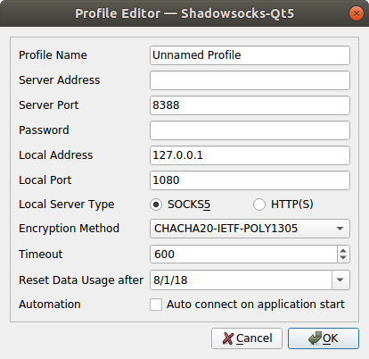

Shadowsocks 设置方法 (Linux)¶
Shadowosocks-QT5¶
下面以 Ubuntu 64 位系统做参考，其他系统请参考 安装指南
安装 Shadowsocks-Qt5¶
按照下面的说明在 Ubuntu 上下载并安装 Shadowsocks-Qt5。
1. 下载客户端¶
转到 Shadowsocks 下载页面。
点击最新版本的 Shadowsocks-Qt5-x.x.x-x86_64.AppImage 进行下载 (x.x.x为版本号) 。
{kind=link}
2. 安装客户端¶
右键单击 “Shadowsocks-Qt5-x.x.x-x86_64.AppImage” > 选择 “Properties” > 单击 “Permissions” > 在”Allow excuting file as program” 上打勾。
双击即可运行
{kind=link}
对于32位的系统可能无法运行，所以需要按下面的步骤来安装客户端
打开终端（搜索 Terminal 或者按
Ctrl+Alt+T键）执行以下命令
sudo add-apt-repository ppa:hzwhuang/ss-qt5
sudo apt-get update
sudo apt-get install shadowsocks-qt5
如果安装成功之后，按
win键搜索应该能够找到软件，如下图所示：
{kind=link}
配置 Shadowsocks 账号¶
获取SS账号¶
单击 “服务” > “我的服务” > 选择 “你可用的产品/服务”。
查看你的节点信息。
以上操作可能不相同，主要目的就是从分享节点的网站中获取节点配置信息。

下面两种方法，任选其一
手动输入服务器配置¶
双击
Shadowsocks-Qt5-x.x.x-x86_64.AppImage> “Connection” > “Add” > “Manually”。
{kind=link}
填写 “Server Address” （为你的节点服务器地址）> 填写”Server Port”（为你的服务端口) > 填写 “Password” （为你的登陆密码)。
在 “Local Address” 处填上 “127.0.0.1” > 在 “local Port” 处填上 “1080” > 选择 “Encryption Method” （为你的加密方式)。
勾选 “Auto connect to connect on application start”, 将会在开启 Shadowsocks-QT5 时自动连接至该服务器。
{kind=link}
二维码方式添加服务器¶
此二维码同样适用于其他客户端。
双击
Shadowsocks-Qt5-x.x.x-x86_64.AppImage> “Connection” > “Add” > “Scan QR code on Screen” > 当弹出新的 “Profile Editor”后，点击 “OK”。点击 “Connect” 图标 。
{kind=link}
命令行客户端¶
Python : https://github.com/shadowsocks/shadowsocks/tree/master#install
Shadowsocks-libev: https://github.com/shadowsocks/shadowsocks-libev#installation
下面我们以 Python 版的 Shadowsocks 为例
安装命令：
Debian / Ubuntu:
apt-get install python-pip
pip install git+https://github.com/shadowsocks/shadowsocks.git@master
CentOS:
yum install python-setuptools && easy_install pip
pip install git+https://github.com/shadowsocks/shadowsocks.git@master
For CentOS 7, if you need AEAD ciphers, you need install libsodium
dnf install libsodium python34-pip
pip3 install git+https://github.com/shadowsocks/shadowsocks.git@master
Linux distributions with snap:
snap install shadowsocks
创建一个 /etc/shadowsocks.json 文件，格式如下
{
"server":"服务器 IP 或是域名",
"server_port":端口号,
"local_address": "127.0.0.1",
"local_port":1080,
"password":"密码",
"timeout":300,
"method":"加密方式 (chacha20-ietf-poly1305 / aes-256-cfb)",
"fast_open": false
}
Python 版客户端命令是 sslocal ， Shadowsocks-libev 客户端命令为 ss-local
/usr/local/bin/sslocal -c /etc/shadowsocks.json -d start
Debian / Ubuntu：
sudo apt-get install proxychains
编辑 /etc/proxychains.conf
修改最后一行
socks5 127.0.0.1 1080
接着我们就可以直接 用 proxychains + 命令的方式使用代理，例如
proxychains curl xxxx
proxychains wget xxxx
sudo proxychains apt-get xxxx
需要在程序内设置一个协议为 socks v5 的代理
服务器：127.0.0.1
端口：1080 #应与Shadowsocks客户端的本地端口对应，默认为1080
在终端内输入
lsof –i:1080
kill 相应的 pid 即可